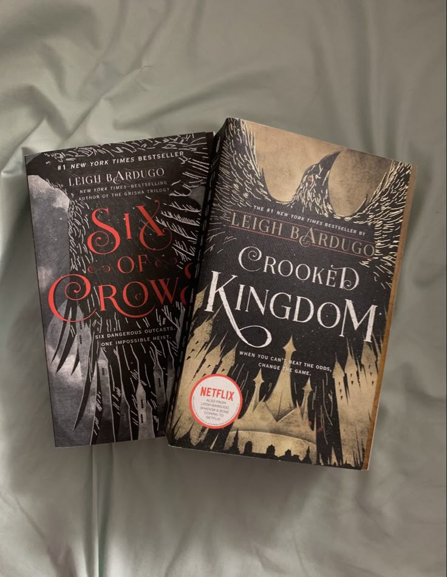
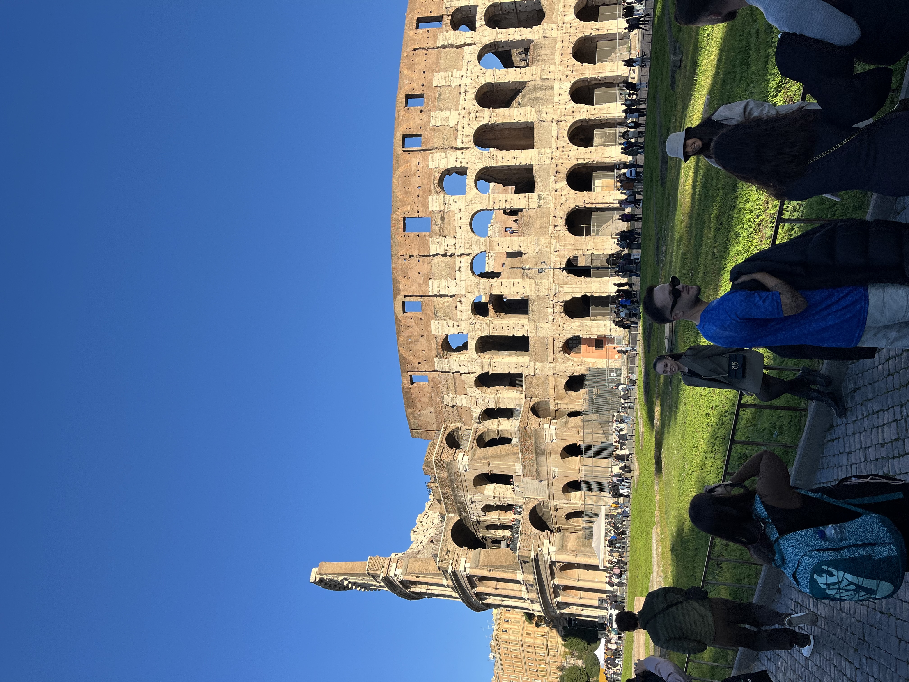

Jeg har likt å male helt fra jeg var liten, og prøver å gjøre det når jeg får tid. Jeg liker å male fordi det er avslappende og gøy. Det føles bra å kunne lage noe eget, og jeg liker å se hvordan farger og former kan forandre et bilde. Å male får meg til å koble av og bare fokusere på det jeg holder på med.
Jeg liker å lese og gjør det ganske mye, i år har jeg lest 25 bøker. Favorittbøkene mine er Six of Crows duologien av Leigh Bardugo og Throne of Glass serien av Sarah J. Maas.

Jeg er veldig glad i å dra på konserter, og til nå har jeg vært på tre en med Olivia Rodrigo, en med Adele og en med Sabrina Carpenter. Neste år skal jeg på to konserter, en i Olso med Conan Gray og en i Stockholm med The Weeknd.
Jeg synes det er veldig gøy å reise til andre steder og land. Det er spennende å oppleve nye ting, se hvordan folk lever andre steder, og prøve ny mat. Jeg liker også å besøke fine steder, ta bilder og få minner som jeg kan tenke tilbake på senere.
